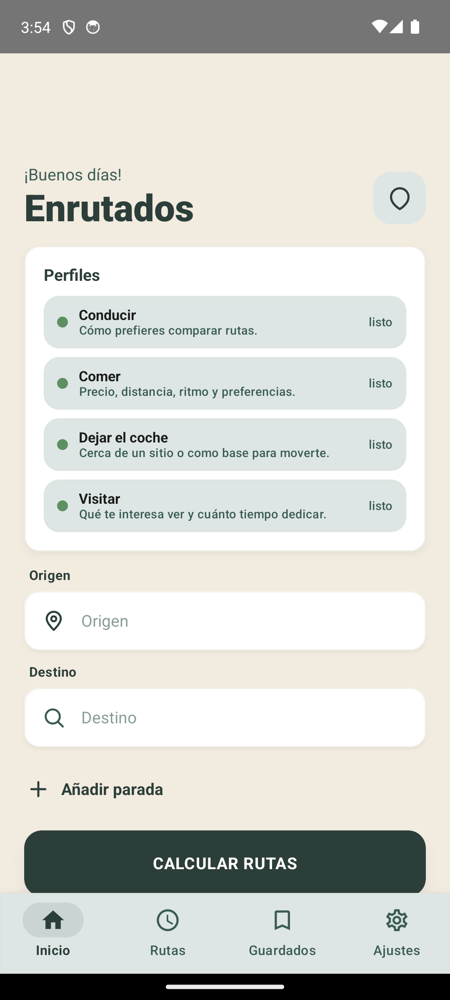

Conducir
Compara rutas por tiempo, peajes, curvas, pendientes y consumo.
Ruta, comida, parking y visitas
Enrutados usa tu perfil y el contexto del momento para reducir opciones, explicarte por qué encajan y mandarte al mapa solo cuando toca comprobar o ir.

Qué resuelve
La app separa lo que normalmente se mezcla: cómo conduces, dónde comes, cómo aparcas y qué te apetece visitar. Cada parte decide con sus propias reglas.
Compara rutas por tiempo, peajes, curvas, pendientes y consumo.
Prioriza precio, distancia, ritmo, requisitos y confianza.
Distingue entre pasear un rato o dejar el coche muchas horas.
Ordena por cercanía y después por calidad contrastada.
Flujo de uso
Enrutados no pide todos los parámetros de golpe. Usa lo que ya sabe, pregunta lo imprescindible y permite ajustar lo que cambia hoy.

La pantalla inicial deja claro qué perfiles están completos y cuáles faltan. Si no hay perfil, la app no finge decidir.
Ruta, comer, dejar el coche, visitar o plan rápido. La intención define qué reglas entran en juego.

Si hoy puedes gastar más, caminar menos o comer más rápido, se cambia esa búsqueda sin rehacer el perfil entero.

La app recomienda pocas opciones. Después puedes comprobar fotos, reseñas, mapa y abrir navegación fuera de Enrutados.
Comer ahora
El perfil marca el punto de partida: presupuesto, distancia, ritmo, requisitos y fuentes. Si lo que aparece no convence, se ajusta el parámetro del momento y se recalcula.

Dejar el coche
Aparcar para dar una vuelta no pesa igual que dejar el coche muchas horas o días. La primera pregunta cambia el scoring antes de mostrar opciones.
Scoring visible
Cuando subes un criterio, los demás se recolocan proporcionalmente. Así el usuario entiende el peso real de cada variable y la decisión se puede explicar.


Plan rápido
El planner no sustituye las verticales. Compone decisiones ya explicadas: tengo X tiempo, necesito aparcar, quiero comer y puedo ver algo cerca.
Base técnica
Cada vertical tiene contrato, perfil, filtros y ranker. La app puede añadir nuevas fuentes o reglas sin convertir food, parking, visitas y rutas en una sola bola.
Intención, contexto, restricciones y recuperación.
Preferencias, pesos, límites, overrides y feedback.
Componentes visibles, filtros previos y avisos.
Explicabilidad suficiente para reconstruir una decisión.
Enrutados